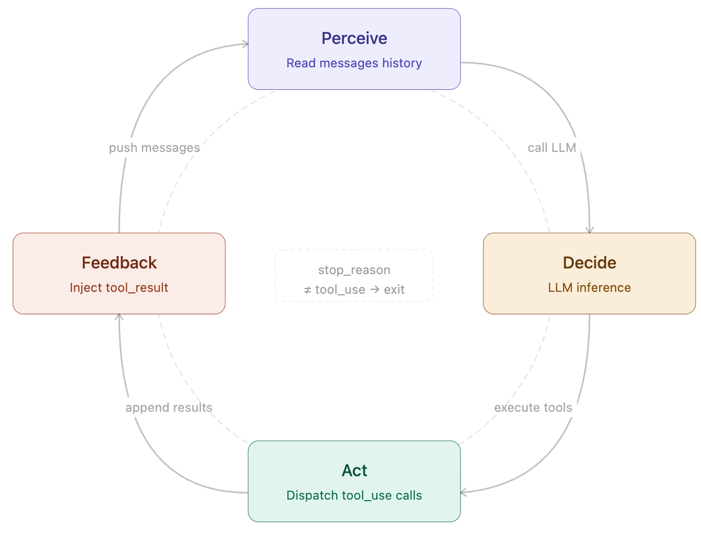
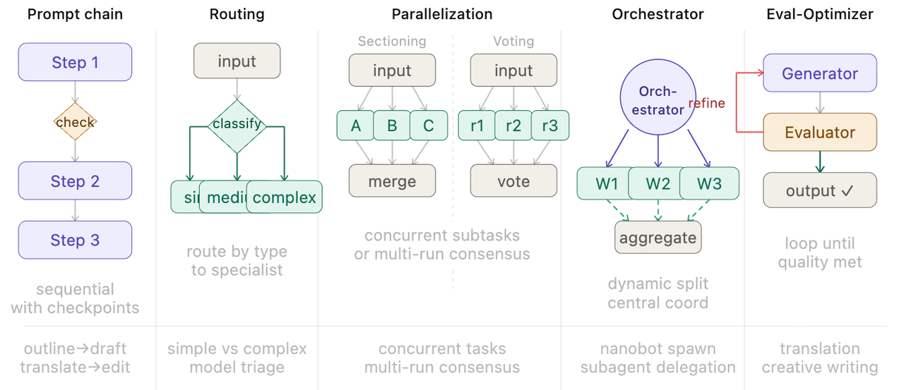
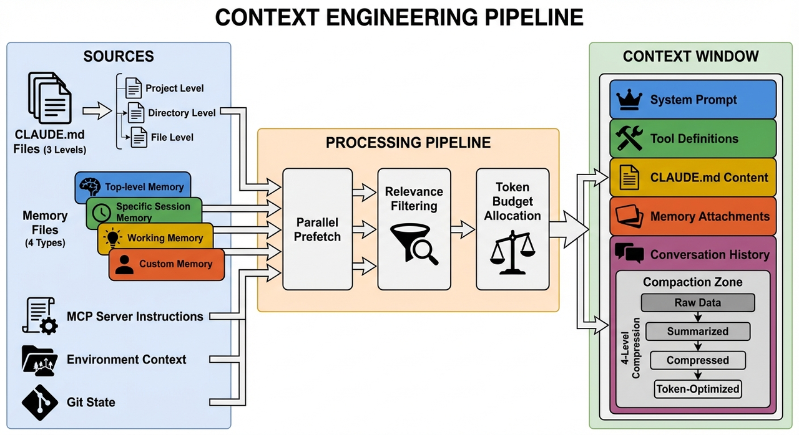
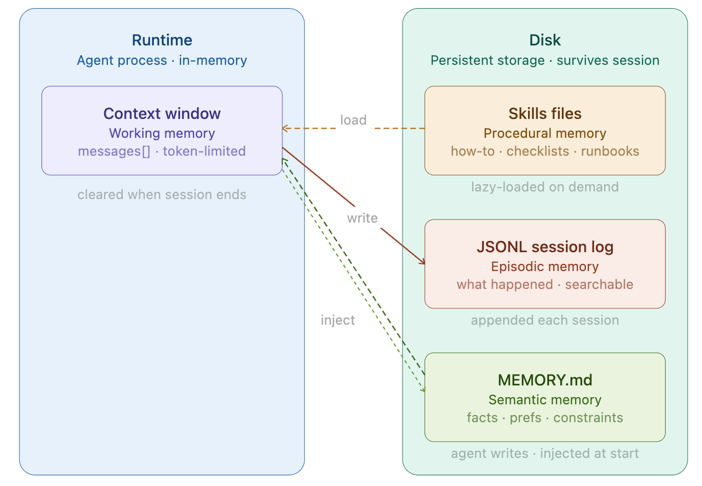
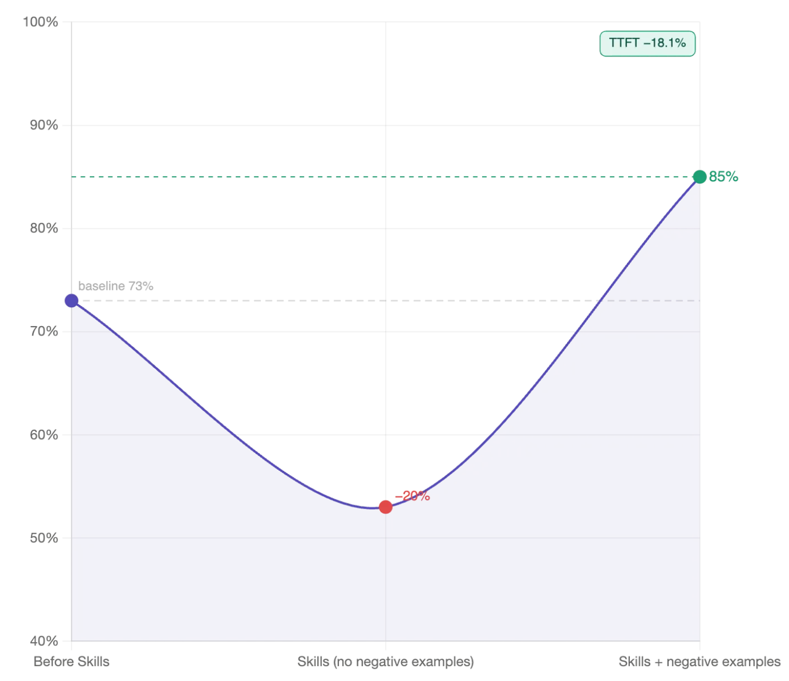

从 Prompt Engineering 到 Context Engineering 再到
将不确定的智能应用于确定的生产流程
信息的更高效组织 · 反映更强的模型能力 · 人类角色变化
为什么需要 Harness？
精心设计单次交互的提示词。模型能力有限时，人在替模型做决策。
在有限的上下文窗口里组织信息。模型变强了，瓶颈转移到信息供给。
完整的工程化体系——权限、记忆、技能、子 Agent。默认模型已经够强，人类逐渐成为效率瓶颈。
Harness 代表一种观念转变：默认模型能力已经很强，而人类逐渐成为系统效率的瓶颈。
Agent 的本质
Perceive
Decide
Act
Feedback


五种经典模式
任务拆成顺序步骤，每步处理上一步输出。中间可加代码检查点。适合生成后翻译、先大纲再正文。
对输入分类，定向到专用处理流程。简单问题走轻量模型，复杂问题走强模型。
分段法：任务拆成独立子任务并发；投票法：同一任务跑多次取共识。适合高风险决策。
中央 LLM 动态分解任务，委派给工作者，综合结果。Claude Code 的 spawn 和子 Agent 就是这个模式。
生成器产出，评估器给反馈，循环直到达标。适合翻译、创意写作等质量标准难以精确定义的任务。
Claude Code 主要使用模式④（Orchestrator-Workers）+ 模式③（Parallelization for Subagents）
Claude Code 可见内容与权限边界
项目文件 — 目录及子目录中的文件
终端 — 你能运行的命令它都能跑
Git 状态 — 分支、未提交更改、提交历史
CLAUDE.md — 人类引导行为的项目契约
Auto Memory — 自动保存的学习成果
Agent 看不到的内容等于不存在
项目契约 / 构建命令 / 禁止事项
语言 / 目录 / 文件类型特定规则
工作流 / 领域知识
大量探索 / 并行研究
确定性脚本 / 审计 / 阻断

通用四级记忆系统
当前任务所需的最小信息。Token 有限，需主动管理。超过 50% 后性能指数级下降。
怎么做某件事——操作流程、领域规范。按需加载，不默认常驻。
JSONL 磁盘持久化。发生了什么——支持跨会话检索。
Agent 主动写入认为重要的事实。每次启动时注入系统提示，前 200 行或 25KB。

记忆记住"是什么"，技能记住"怎么做"
Tools = 原子操作（读文件、运行命令）
Skills = 工作流（"帮我做 Code Review"、"帮我部署到 staging"）

高频 → 常驻系统提示 · 低频 → 按需加载 · 极低频 → 直接用文档替代
Orchestrator-Workers 模式
Orchestrator
读大文件
Web Search
代码探索
子 Agent 从空白消息列表开始，不继承主 Agent 的敏感上下文。
子 Agent 的完整输出不回灌主 Agent，只返回精炼摘要。
大多数最佳实践都基于一个限制
rewind / 及时 /compact / HANDOFF.md + 新开对话 / 方向不对直接新开比纠正更高效
标准工作流：spec → plan → implement → test，提供明确的验收标准
能用代码解决的不用 LLM，能用 Hook 拦截的不用提示词
把 Agent 当人类来看——提供足够明确的信息它才能工作，明确能力边界
Unnecessary requirements from context files make tasks harder
时常整理代码库避免熵增，干净的代码库 = 高效的 Agent
插件与参考资源
高级工作流 Skills：TDD、调试、并行开发、代码审查等全套工具链
精选 Skills 集合，覆盖多种开发场景
状态栏可视化，实时展示 Agent 工作状态
增强记忆管理，跨会话知识保持
Takeaway
将不确定的智能应用于确定的生产流程
✦ Agent = while(true) { 感知 → 决策 → 行动 → 反馈 }
✦ 上下文工程：Agent 看不到的 = 不存在
✦ 确定性的逻辑交给确定的工程
✦ CLAUDE.md 太长不如不写
✦ 人类从操作者变成系统设计师